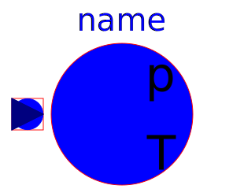
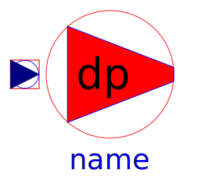

This package contains different types of sources:
Thermodynamic equations are defined in partial models (package Interfaces.Partials). All fans / pumps are considered without losses, they do not change enthalpy flow.
| Name | Description |
|---|---|
|  Ambient | Ambient with constant properties |
| Defines absolute pressure level | |
| Enforces constant volume flow | |
|  PressureIncrease | Enforces constant pressure increase |
| Model of an ideal pump |